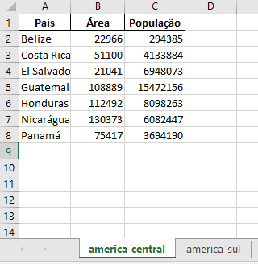

3. A BIBLIOTECA PANDAS#
Pandas é uma biblioteca de programação em Python que fornece estruturas de dados e ferramentas de análise de dados flexíveis e eficientes. É uma das bibliotecas mais populares e amplamente utilizadas para análise e manipulação de dados em Python. Ele transforma a complexidade da manipulação de dados em tarefas intuitivas, permitindo que o usuário se concentre na análise dos dados ao invés de se preocupar com os aspectos técnicos da preparação de dados. Constituem pontos-chave do Pandas:
Estruturas de Dados: O Pandas introduz duas estruturas de dados principais para Python: Series e DataFrame;
Manipulação de Dados: Facilita a filtragem seleção, mesclagem e agrupamento de dados. Disponibiliza ainda funções e métodos para efetuar rapidamente operações comuns, como: Manipulação de datas; Ajuste de dados faltantes; Agrupamento e agregação de dados; Fusão e junção de conjuntos de dados;
Análise de Dados: Facilita a análise estatística dos dados. Ele integra-se bem com outras bibliotecas de análise de dados e visualização, como numpy, scipy e matplotlib;
Importação e Exportação de Dados: Suporta uma ampla variedade de formatos de arquivos, como CSV, Excel, SQL, HDF5, entre outros. Isso torna fácil importar dados para análise e exportar resultados após a análise;
Integração: integra-se bem com muitas outras bibliotecas do ecossistema de ciência de dados em Python, como matplotlib para visualização, scikit-learn para aprendizado de máquina e statsmodels para modelagem estatística.
3.1 Introdução e Configurações Básicas#
3.1.1 Configurações iniciais#
Ao iniciar com a biblioteca Pandas, é importante realizar algumas configurações iniciais para garantir que a experiência de análise de dados seja otimizada e alinhada às suas preferências. Abaixo, apresento algumas configurações comuns que os usuários do Pandas frequentemente ajustam:
Importação da Biblioteca: Antes de qualquer coisa, você precisa importar a biblioteca. Pandas é geralmente importado com o alias “pd” por convenção.
import pandas as pd
Configuração do número máximo de linhas e colunas exibidas: Se você estiver trabalhando com DataFrames grandes, pode querer ajustar o número de linhas e colunas exibidas por padrão quando imprimir o DataFrame.
pd.set_option('display.max_rows', 20)
pd.set_option('display.max_columns', 10)
Largura da Coluna e Precisão: Para melhor visualização dos dados, você pode ajustar a largura da coluna e a precisão (número de casas decimais).
pd.set_option('display.max_colwidth', 20)
pd.set_option('display.precision', 2)
Configuração do Float Format: Controla a formatação de números flutuantes. Útil para quando se quer mostrar valores em formato de porcentagem, por exemplo.
pd.options.display.float_format = '{:,.2f}'.format
Evitando Notação Científica: Por padrão, o Pandas pode exibir números grandes ou muito pequenos usando notação científica. Para desativar isso:
pd.set_option('display.float_format', lambda x: '%.2f' % x)
Configurações de Visualização: Se estiver usando o Jupyter Notebook ou Jupyter Lab, para que os plots feitos com Pandas (integrados com Matplotlib) sejam exibidos diretamente no notebook:
%matplotlib inline
Configuração de Data e Hora: Se estiver trabalhando com séries temporais, pode ser útil ajustar a formatação padrão de datas.
pd.set_option('display.date_dayfirst', True)
Configuração do Encoding Padrão: Ao lidar com conjuntos de dados que possuem caracteres especiais ou não-ASCII, configurar o encoding padrão para leitura e escrita de arquivos pode evitar problemas.
pd.set_option('display.encoding', 'UTF-8')
Estas são apenas algumas das opções que você pode configurar ao iniciar com o Pandas. Dependendo da natureza de seus dados e suas preferências pessoais, você pode precisar ajustar outras opções. Consulte a documentação do Pandas para uma lista completa de opções configuráveis.
3.1.2 Introdução às estruturas de dados no Pandas#
O domínio das estruturas de dados do Pandas é essencial para qualquer pessoa que deseja trabalhar com análise de dados em Python. Uma vez que você esteja confortável com Series e DataFrame, muitas tarefas complexas de processamento de dados se tornarão mais simples e diretas.
No contexto da biblioteca Pandas, quando falamos de estruturas de dados, nos referimos principalmente a duas estruturas fundamentais: a Series e o DataFrame, que são a base para a maioria das operações de análise de dados em Python. Ambas foram projetadas para facilitar a manipulação de dados em Python, cada uma servindo a diferentes propósitos e possuindo suas características específicas.
Além de Series e DataFrame, o Pandas oferece outras estruturas mais especializadas como Panel (estrutura tridimensional, menos usada) e MultiIndex (para indexação hierárquica).
Series
Series é uma estrutura de dados unidimensional, que pode armazenar valores de qualquer tipo de dado (números, strings, objetos Python, etc.). É, em essência, uma coluna em um DataFrame. Os rótulos dos eixos são chamados de índice.
Uma Series oferece uma variedade de métodos e operações para facilitar a manipulação e análise de dados unidimensionais.
Características Principais:
Unidimensionalidade: Series contém uma sequência de itens em uma única dimensão;
Index: Cada elemento em uma Series é associado a um índice. Esse índice é, por padrão, uma sequência numérica começando por zero, mas pode ser de outros tipos, como datas, strings ou até mesmo outros números;
Homogeneidade: Apesar de uma Series poder conter qualquer tipo de dado, todos os itens em uma única Series devem ser do mesmo tipo. Se diferentes tipos são colocados em uma Series, ela tentará converter os tipos para um formato comum;
Nome: Uma Series pode ter um atributo nome, o que pode ser útil especialmente quando a Series é usada como uma coluna em um DataFrame.
Usos Comuns:
Seleção de dados: Muitas vezes, quando você seleciona uma única coluna de um DataFrame, o resultado é uma Series;
Operações aritméticas: Assim como com arrays do Numpy, é possível realizar operações aritméticas com uma Series;
Operações de agregação: Você pode aplicar funções de agregação, como soma, média, mediana, entre outras, diretamente a uma Series; Filtragem: É fácil filtrar dados em uma Series usando operadores condicionais;
Aplicação de funções: O método .apply() permite que você aplique uma função a cada item de uma Series.
Conversão de tipos: Converta os tipos de dados em uma Series usando o método astype();
Manipulação de strings: Se a Series contém strings, o Pandas oferece um conjunto robusto de operações de string através do atributo .str;
Tratamento de valores faltantes: Métodos como .fillna() ou .dropna() ajudam a lidar com valores faltantes (NaN) em uma Series.
DataFrame
Um DataFrame é uma estrutura de dados bidimensional, semelhante a uma planilha ou uma tabela de banco de dados, uma planilha do Excel ou uma tabela em linguagens estatísticas como R, que pode armazenar dados de diferentes tipos em suas colunas. O DataFrame é a estrutura central do Pandas e é a ferramenta de escolha para a maioria das operações de análise de dados em Python. Seu design flexível e a grande quantidade de métodos e funcionalidades o tornam ideal para trabalhar com dados em muitos contextos diferentes. Enquanto a Series é essencial e útil em muitos cenários, o DataFrame amplia essa utilidade para operações mais complexas e análises multidimensionais.
Características Principais:
Bidimensionalidade: Ao contrário da Series (unidimensional), um DataFrame é bidimensional, representando dados em linhas e colunas; Colunas com Nomes: Cada coluna em um DataFrame tem um nome, que serve como seu identificador;
Indexação: Assim como a Series, o DataFrame tem um índice que identifica cada linha. Esse índice pode ser numérico, de data, de string, ou até mesmo hierárquico;
Colunas com diferentes tipos de dados: Enquanto uma Series deve ter um tipo de dado único, um DataFrame pode ter diferentes tipos de dados em suas diferentes colunas (por exemplo, inteiros, floats, strings);
Flexibilidade: Você pode adicionar ou remover colunas, alterar o índice, reordenar as linhas, entre outras operações; Funcionalidades: O Pandas oferece uma ampla gama de funções e métodos para manipular, filtrar, agrupar, transformar e analisar os dados em um DataFrame;
Integração com Outras Bibliotecas: DataFrames podem ser facilmente convertidos para outras estruturas de dados, como arrays do numpy, e são amplamente utilizados em conjunto com outras bibliotecas de análise de dados e visualização, como matplotlib, seaborn e scikit-learn;
Importação e Exportação: Com o Pandas, é possível ler dados de diversas fontes, como arquivos CSV, Excel, bancos de dados SQL e muitos outros formatos, diretamente para um DataFrame. Da mesma forma, os dados em um DataFrame podem ser facilmente exportados para esses formatos.
Usos Comuns:
Manipulação de dados: Seleção, adição e exclusão de colunas e linhas;
Agrupamento: Utilizando o método groupby() é possível agrupar dados com base em certos critérios e aplicar funções de agregação; Mesclagem e junção: Com métodos como merge() e join(), é possível combinar diferentes DataFrames de acordo com critérios específicos; Pivotamento: Transforme dados de formato longo para largo e vice-versa usando métodos como pivot();
Visualização: O Pandas integra-se bem com bibliotecas de visualização, como Matplotlib, permitindo a criação de gráficos diretamente de um DataFrame;
Estatísticas e análise: Calcule estatísticas básicas, realize testes estatísticos, explore correlações e muito mais; Tratamento de valores faltantes: Use métodos como fillna(), dropna(), e interpolate() para tratar dados faltantes.
Diferenças em Relação às Series:
Dimensionalidade: Enquanto uma Series é unidimensional, o DataFrame é bidimensional;
Tipos de dados: A Series tem um único tipo de dado para todos os seus elementos, enquanto um DataFrame pode ter colunas com diferentes tipos de dados;
Acessibilidade: Em uma Series, acessamos os dados pelo índice. Em um DataFrame, usamos o nome da coluna (ou uma lista de nomes de colunas) para selecionar colunas específicas;
Estrutura: Enquanto você pode pensar em uma Series como uma única coluna de dados com índices, um DataFrame é como um conjunto de Series que compartilham um índice comum.
3.1.3 Criação e manipulação de Series#
A criação e a manipulação de Series é um aspecto importante da análise de dados, pois nos permite organizar e trabalhar com sequências de dados de maneira sistemática. Vamos aprender sobre as algumas das ferramentas e técnicas fundamentais para gerenciar e analisar dados em séries.
Criação de uma Series a partir de uma lista
import pandas as pd
s = pd.Series([1, 2, 3, 4, 5])
A coluna esquerda é o índice da Series (lembre-se que a indexação no Python começa em zero), enquanto a coluna a direita armazena os valores definidos pelo usuário.
Definindo um índice personalizado
s = pd.Series([1, 2, 3, 4, 5], index=['a', 'b', 'c', 'd', 'e'])
Acessando valores e índices
s.values
array([1, 2, 3, 4, 5])
s.index
Index(['a', 'b', 'c', 'd', 'e'], dtype='object')
Operações aritméticas básicas
s + 10
a 11
b 12
c 13
d 14
e 15
dtype: int64
s * 2
a 2
b 4
c 6
d 8
e 10
dtype: int64
Indexação e Seleção
Seleção por índice
s['a']
1
Seleção por posição
s[0]
1
Seleção condicional
s[s > 2]
c 3
d 4
e 5
dtype: int64
Fatiamento
s[1:4]
b 2
c 3
d 4
dtype: int64
s['a':'c']
a 1
b 2
c 3
dtype: int64
Atribuição de valores
s['a'] = 10
3.1.4 Criação de DataFrames#
O Pandas facilita a criação de DataFrames a partir de diferentes formatos de dados. Seja um arquivo CSV, uma planilha do Excel, um banco de dados ou até mesmo uma API, o Pandas oferece funcionalidades para transformar essas diversas fontes de informação em estruturas de dados organizadas. Internamente, é possível criar DataFrames a partir de tipos básicos de dados e estruturas de dados. Vamos ver alguns exemplos:
Criação de DataFrame a partir de um dicionário:
import pandas as pd
dados = {
'Nome': ['Ana', 'Bruno', 'Carlos'],
'Idade': [25, 30, 35],
'Cidade': ['Curitiba', 'Belém', 'Belo Horizonte']
}
df = pd.DataFrame(dados)
df
| Nome | Idade | Cidade | |
|---|---|---|---|
| 0 | Ana | 25 | Curitiba |
| 1 | Bruno | 30 | Belém |
| 2 | Carlos | 35 | Belo Horizonte |
Neste código, primeiro é realizada a importação da biblioteca Pandas com o apelido “pd”. Em seguida, é criado um dicionário chamado “dados”, contendo três pares chave-valor que representam, respectivamente, nomes, idades e cidades de três indivíduos. Por fim, o dicionário é convertido em um DataFrame do Pandas e armazenado na variável “df”. Assim, o DataFrame “df” organiza as informações presentes no dicionário “dados” em forma de tabela, facilitando análises e manipulações posteriores dos dados.
Criação de um DataFrame a partir de uma lista:
nome = ['Ana', 'Bruno', 'Carlos']
idade = [25, 30, 35]
cidade = ['Curitiba', 'Belém', 'Belo Horizonte']
df = pd.DataFrame(list(zip(nome, idade, cidade)), columns=['Nome', 'Idade', 'Cidade'])
Neste código, são definidas três listas: “nome”, “idade” e “cidade”, que contêm, respectivamente, os nomes, idades e cidades de três indivíduos. A função zip é usada para agrupar os elementos correspondentes dessas três listas em tuplas. A função list converte o resultado do zip em uma lista de tuplas, onde cada tupla contém um nome, uma idade e uma cidade. Finalmente, essa lista de tuplas é convertida em um DataFrame, com as colunas nomeadas como ‘Nome’, ‘Idade’ e ‘Cidade’. O resultado é armazenado na variável “df”.
Criação de DataFrames a partir de arquivos:
No contexto do Geoprocessamento, frequentemente lidamos com vastas quantidades de informações armazenadas em diferentes formatos de arquivos, como CSV, Excel, entre outros. A criação de DataFrames a partir de arquivos permite acessar, visualizar e trabalhar com os dados de uma maneira mais organizada e intuitiva. Veremos como criar DataFrames a partir de arquivos externos mais adiante em nosso curso.
3.2 Manipulação e Seleção de Dados#
3.2.1 Seleção e filtragem em DataFrames#
Ao trabalhar com DataFrames no Pandas, uma habilidade importante é a capacidade de selecionar e filtrar dados de forma eficaz. Dado que um DataFrame pode conter grandes quantidades de dados, frequentemente precisamos isolar subconjuntos específicos desses dados para análises mais detalhadas ou operações subsequentes. Seja para extrair colunas específicas, selecionar linhas baseadas em critérios definidos ou combinar ambos os métodos, o Pandas oferece uma variedade de ferramentas intuitivas que tornam essas tarefas simples e diretas.
Estudaremos a seleção e a filtragem de dados no Pandas a partir de exemplos. Vamos começar criando um conjunto de dados (DataFrame):
dados = {
'País': ['Brasil', 'Argentina', 'Chile', 'Uruguai', 'Paraguai', 'Bolívia'],
'População': [211050000, 45195777, 19116201, 3473727, 7044636, 11513100],
'Área': [8515767, 2780400, 756102, 176215, 406752, 1098581], # em km^2
'PIB (2020)': [2.055, 0.389, 0.282, 0.056, 0.038, 0.034] # PIB em
# trilhões de dólares para 2020 (valores aproximados)
}
df = pd.DataFrame(dados)
# Exibindo o DataFrame
print(df)
País População Área PIB (2020)
0 Brasil 211050000 8515767 2.06
1 Argentina 45195777 2780400 0.39
2 Chile 19116201 756102 0.28
3 Uruguai 3473727 176215 0.06
4 Paraguai 7044636 406752 0.04
5 Bolívia 11513100 1098581 0.03
Selecionar colunas e linhas específicas
Para selecionar uma única coluna, você pode usar a notação de colchetes com o nome da coluna.
# Selecionando apenas a coluna 'País'
paises = df['País']
print(paises)
0 Brasil
1 Argentina
2 Chile
3 Uruguai
4 Paraguai
5 Bolívia
Name: País, dtype: object
Para selecionar várias colunas, você pode passar uma lista com os nomes das colunas desejadas:
# Selecionando as colunas 'País' e 'PIB (2020)'
paises_pib = df[['País', 'PIB (2020)']]
print(paises_pib)
País PIB (2020)
0 Brasil 2.06
1 Argentina 0.39
2 Chile 0.28
3 Uruguai 0.06
4 Paraguai 0.04
5 Bolívia 0.03
Usando o método .iloc:
O método iloc do Pandas permite selecionar linhas e colunas em um DataFrame usando índices numéricos. É uma abordagem baseada em posição, o que significa que você se refere às linhas e colunas por seus índices numéricos.
Para selecionar uma única linha, você pode usar a notação de colchetes com o índice da linha.
# Selecionando a terceira linha (índice 2)
linha3 = df.iloc[2]
print(linha3)
País Chile
População 19116201
Área 756102
PIB (2020) 0.28
Name: 2, dtype: object
Você pode selecionar várias linhas passando uma lista de índices ou um intervalo de índices. Por exemplo, selecionar as três primeiras linhas do DataFrame:
primeiras_tres = df.iloc[0:3]
print(primeiras_tres)
País População Área PIB (2020)
0 Brasil 211050000 8515767 2.06
1 Argentina 45195777 2780400 0.39
2 Chile 19116201 756102 0.28
Para selecionar linhas com índices específicos:
linhas_especificas = df.iloc[[1, 3, 5]]
print(linhas_especificas)
País População Área PIB (2020)
1 Argentina 45195777 2780400 0.39
3 Uruguai 3473727 176215 0.06
5 Bolívia 11513100 1098581 0.03
Selecionando Linhas e Colunas Simultaneamente
Com iloc, você também pode selecionar linhas e colunas específicas ao mesmo tempo. Para selecionar uma coluna específica utilizando o método iloc, é necessário fornecer os índices das linhas e da coluna desejada. Se você deseja selecionar toda a coluna “País”, por exemplo, pode fazer o seguinte:
coluna_pais = df.iloc[:, 0]
print(coluna_pais)
0 Brasil
1 Argentina
2 Chile
3 Uruguai
4 Paraguai
5 Bolívia
Name: País, dtype: object
Neste código, df.iloc[:, 0] seleciona todas as linhas (indicado pelo “:”) da primeira coluna (índice 0).
Se você quiser especificar tanto as linhas quanto as colunas a serem selecionados, usando o iloc:
selecao = df.iloc[1:4, [0, 3]]
print(selecao)
País PIB (2020)
1 Argentina 0.39
2 Chile 0.28
3 Uruguai 0.06
Usando loc (por índices etiquetados ou nomes de colunas)
O método loc do Pandas é usado para selecionar linhas e colunas por seus índices etiquetados (ou rótulos) e nomes de colunas, ao contrário do iloc, que usa índices numéricos. Vamos ver como usar o loc com o nosso DataFrame.
Inicialmente, vamos alterar o DataFrame que utilizamos no estudo do método ‘iloc’, definindo como índice etiquetado (rótulo) o nome do país:
df.set_index('País', inplace=True)
print(df)
População Área PIB (2020)
País
Brasil 211050000 8515767 2.06
Argentina 45195777 2780400 0.39
Chile 19116201 756102 0.28
Uruguai 3473727 176215 0.06
Paraguai 7044636 406752 0.04
Bolívia 11513100 1098581 0.03
O método set_index do DataFrame é usado para definir uma coluna como índice (ou rótulo de linha) do DataFrame. O argumento que você fornece a este método especifica a coluna que você deseja usar como índice. Aqui, estamos indicando que queremos definir a coluna ‘País’ como o índice do DataFrame df. Quando inplace é definido como True, a operação modifica o DataFrame original e não retorna um novo DataFrame. Se inplace for False (ou não fornecido), a operação retornará um novo DataFrame com a alteração, e o DataFrame original não será modificado.
Selecionando uma Única Linha
Exemplo: Selecionar a linha com índice ‘Brasil’.
linha_brasil = df.loc['Brasil']
print(linha_brasil)
População 211050000.00
Área 8515767.00
PIB (2020) 2.06
Name: Brasil, dtype: float64
Selecionando Múltiplas Linhas
Exemplo: Selecionar as linhas com índices ‘Brasil’, ‘Argentina’ e ‘Chile’.
linhas_selecionadas = df.loc[['Brasil', 'Argentina', 'Chile']]
print(linhas_selecionadas)
População Área PIB (2020)
País
Brasil 211050000 8515767 2.06
Argentina 45195777 2780400 0.39
Chile 19116201 756102 0.28
Selecionando Linhas e Colunas Simultaneamente
Exemplo: Selecionar as linhas ‘Brasil’ e ‘Argentina’ e as colunas ‘População’ e ‘PIB (2020)’.
selecao = df.loc[['Brasil', 'Argentina'], ['População', 'PIB (2020)']]
print(selecao)
População PIB (2020)
País
Brasil 211050000 2.06
Argentina 45195777 0.39
Selecionando Todas as Linhas de Colunas Específicas
Exemplo: Selecionar todas as linhas e apenas a coluna ‘Área’.
coluna_area = df.loc[:, 'Área']
print(coluna_area)
País
Brasil 8515767
Argentina 2780400
Chile 756102
Uruguai 176215
Paraguai 406752
Bolívia 1098581
Name: Área, dtype: int64
Filtragem de dados com base em condições
Com o Pandas, é possível filtrar um DataFrame baseado em condições específicas aplicadas às colunas.
A filtragem de dados baseada em condições é uma das operações mais comuns ao trabalhar com DataFrames no Pandas. Isso permite que você selecione subconjuntos de dados que atendam a critérios específicos. Vamos explorar como fazer isso.
Vamos utilizar o DataFrame que tem os rótulos das linhas numerados, mas resetando o seu índice.
df.reset_index(inplace=True)
df
| País | População | Área | PIB (2020) | |
|---|---|---|---|---|
| 0 | Brasil | 211050000 | 8515767 | 2.06 |
| 1 | Argentina | 45195777 | 2780400 | 0.39 |
| 2 | Chile | 19116201 | 756102 | 0.28 |
| 3 | Uruguai | 3473727 | 176215 | 0.06 |
| 4 | Paraguai | 7044636 | 406752 | 0.04 |
| 5 | Bolívia | 11513100 | 1098581 | 0.03 |
Filtragem Simples
Exemplo: selecionar todos os países com uma população maior que 10 milhões.
paises_10M = df[df['População'] > 10000000]
print(paises_10M)
País População Área PIB (2020)
0 Brasil 211050000 8515767 2.06
1 Argentina 45195777 2780400 0.39
2 Chile 19116201 756102 0.28
5 Bolívia 11513100 1098581 0.03
Usando Múltiplas Condições:
Se você quiser combinar várias condições, pode usar os operadores “&” (e), “|” (ou) e “ ~ ” (não). Lembre-se de colocar cada condição entre parênteses.
Por exemplo, para selecionar países com uma população maior que 15 milhões e uma área menor que 1 milhão de km2:
filtro = (df['População'] > 15000000) & (df['Área'] < 1000000)
paises_filtrados = df[filtro]
print(paises_filtrados)
País População Área PIB (2020)
2 Chile 19116201 756102 0.28
Usando o Método isin:
Se você quiser filtrar com base em uma lista de valores, pode usar o método isin. Por exemplo, para selecionar países que estão na lista ['Brasil', 'Argentina', 'Chile']:
paises_lista = df[df['País'].isin(['Brasil', 'Argentina', 'Chile'])]
print(paises_lista)
País População Área PIB (2020)
0 Brasil 211050000 8515767 2.06
1 Argentina 45195777 2780400 0.39
2 Chile 19116201 756102 0.28
Filtragem com query
O método query permite filtrar usando uma string de consulta, o que pode ser mais legível em algumas situações. Por exemplo, para selecionar países com uma área menor que 500.000 km2:
paises_grandes_query = df.query('Área < 500000')
print(paises_grandes_query)
País População Área PIB (2020)
3 Uruguai 3473727 176215 0.06
4 Paraguai 7044636 406752 0.04
3.2.2 Manipulação de Dados em DataFrames#
A manipulação de dados é uma das principais funcionalidades oferecidas pelo Pandas. Com ela, é possível realizar uma ampla variedade de operações para transformar, limpar e analisar seus conjuntos de dados.
Alterando um valor específico
Para alterar um valor específico, você pode usar loc ou iloc. Exemplo:
Alterar a população do Brasil para 203.062.215:
df.loc[df['País'] == 'Brasil', 'População'] = 203062512
Alterando valores com base em uma condição:
Você pode combinar a filtragem de dados com a atribuição para alterar valores com base em uma condição:
df.loc[df['População'] > 15000000, 'PIB (2020)'] += 0.1
Neste exemplo, estamos aumentando o PIB (2020) em 100 bilhões (lembrando que o PIB registrado no DataFrame original está em trilhões de dólares) para todos os países com uma população superior a 15 milhões.
Usando o método replace
O método replace é usado para substituir valores específicos. Por exemplo, substituir o nome “Brasil” por “República Federativa do Brasil”:
df['País'] = df['País'].replace('Brasil', 'República Federativa do Brasil')
Alterando valores usando uma função com apply
O método apply permite aplicar uma função a cada elemento de uma coluna ou linha. Por exemplo, aumentar a população de todos os países em 5%:
df['População'] = df['População'].apply(lambda x: int(x * 1.05))
Neste exemplo, estamos multiplicando a população de cada país por 1.05, o que resulta em um aumento de 5% na população original.
Redefinindo valores de uma coluna inteira
Por exemplo, redefinir todos os valores da coluna PIB (2020) para zero:
df['PIB (2020)'] = 0
Estes são apenas alguns exemplos básicos de como alterar valores em um DataFrame do Pandas. A biblioteca oferece uma ampla variedade de métodos e funcionalidades que permitem manipular e transformar dados de maneira eficiente.
Adicionando e removendo colunas
Em muitas situações de análise e manipulação de dados, é comum a necessidade de ajustar a estrutura dos conjuntos de dados para melhor atender aos requisitos do projeto. No contexto dos DataFrames do Pandas, essa flexibilidade é amplamente facilitada através de métodos que permitem adicionar novas colunas, seja com base em cálculos, combinações ou informações externas, bem como remover colunas que podem não ser relevantes para a análise subsequente. Vamos aplicar alguns dos principais métodos a partir de exemplos:
Adicionando uma nova coluna
Para adicionar uma nova coluna com valores padrão:
df['NovaColuna'] = 'Valor Padrão'
df['Continente'] = 'América do Sul'
Removendo uma coluna
Para remover uma coluna:
df.drop('Continente', axis=1, inplace=True)
O método drop do Pandas é usado para remover linhas ou colunas de um DataFrame. No código fornecido, o método está sendo aplicado para remover uma coluna:
‘Continente’: é o nome da coluna que você deseja remover.
‘axis=1: especifica que a operação deve ser realizada nas colunas. Se você estivesse removendo uma linha, usaria axis=0.
inplace=True: essa opção significa que a alteração será aplicada diretamente no DataFrame df, sem necessidade de reatribuição. Se inplace fosse definido como False (ou omitido, já que o padrão é False), o método retornaria um novo DataFrame com a coluna removida, mas o DataFrame original df permaneceria inalterado.
Adicionando uma coluna com base em outras colunas
Exemplo 1: adicionar uma coluna que seja a razão entre a população e a área.
df['Densidade_populacional'] = df['População'] / df['Área']
Exemplo 2: Adicionar uma coluna que seja a relação entre o PIB e o número de habitantes:
df['Renda Per Capita'] = df['PIB (2020)'] * 1e12 / df['População']
Removendo múltiplas colunas
Para remover várias colunas:
df.drop(['Densidade_populacional', 'Renda Per Capita'], axis=1, inplace=True)
Adicionando colunas usando assign
O método assign permite adicionar uma ou mais colunas ao DataFrame:
df = df.assign(
Densidade_Populacional = df['População'] / df['Área'],
PIB_Per_Capita = df['PIB (2020)'] * 1e12 / df['População']
)
Adicionando colunas em locais específicos
Para adicionar uma coluna em uma posição específica, é possível usar o método insert:
df.insert(loc=1, column='Continente', value='América do Sul')
Os argumentos fornecidos ao método insert fazem o seguinte:
loc=1: Especifica a posição (ou índice) onde a nova coluna deve ser inserida. Neste caso, a nova coluna será inserida na posição 1 (lembrando que a indexação começa em 0). Portanto, a nova coluna será a segunda coluna no DataFrame.
column=’Continente’: Define o nome da nova coluna como ‘Continente’.
value=’América do Sul’: Especifica o valor que será preenchido em todas as linhas dessa nova coluna. Aqui, todas as linhas da coluna ‘Continente’ terão o valor ‘América do Sul’.
Neste exemplo, a nova coluna foi inserida na segunda posição (lembre-se que a indexação no Python começa em zero).
Estes são apenas alguns exemplos básicos de como adicionar e remover colunas em um DataFrame do Pandas. A biblioteca oferece uma ampla variedade de métodos e funcionalidades que permitem manipular e transformar dados de maneira eficiente.
3.2.3 Manipulação de índices#
Índices são essenciais no Pandas, pois permitem acesso rápido a linhas e colunas, facilitam a organização dos dados e são úteis para operações como junções. Já utilizamos métodos para manipulação de índices nos exemplos anteriores. Nesta seção, vamos dar continuidade ao seu estudo. Para tanto, vamos utilizar o mesmo DataFrame dos exemplos anteriores:
# Dicionário de listas
dados = {
'País': ['Brasil', 'Argentina', 'Chile', 'Uruguai', 'Paraguai', 'Bolívia'],
'População': [211050000, 45195777, 19116201, 3473727, 7044636, 11513100],
'Área': [8515767, 2780400, 756102, 176215, 406752, 1098581], # em km^2
'PIB (2020)': [2.055, 0.389, 0.282, 0.056, 0.038, 0.034] # PIB em
# trilhões de dólares para 2020 (valores aproximados)
}
df = pd.DataFrame(dados)
Definindo uma coluna como índice
Para definir a coluna “País” como índice:
df = df.set_index('País')
Renomeando índices
Renomear o índice “Uruguai” para “República Oriental do Uruguai”:
df = df.rename(index={'Uruguai': 'República Oriental do Uruguai'})
Selecionando linhas por índice
Para selecionar os dados referentes ao Chile:
chile_dados = df.loc['Chile']
Removendo linhas por índice
Para remover os dados referentes a Argentina:
df = df.drop('Argentina')
Verificando a existência de índices
Para verificar se o Brasil está no índice:
print('Brasil' in df.index)
True
Para verificar se a Argentina está no índice:
print('Argentina' in df.index)
False
Alterando a ordem dos índices
Para ordenar os países em ordem alfabética decrescente:
df = df.sort_index(ascending=False)
3.2.4 Operações aritméticas com DataFrames#
As operações aritméticas com DataFrames são componentes essenciais da análise de dados. Essas operações podem ser realizadas entre colunas de um único DataFrame, entre Series e DataFrames, ou entre dois DataFrames. Abaixo, você encontrará os principais tópicos relacionados a operações aritméticas com DataFrames no Pandas:
Operações Escalares
Exemplo: Aplicar uma operação aritmética entre um DataFrame e um escalar (multiplicar todos os valores do DataFrame por 10): Inicialmente, vamos criar um DataFrame:
df = pd.DataFrame({
'A': [1, 2, 3],
'B': [4, 5, 6]
})
Em seguida, aplicamos a multiplicação:
df * 10 # Multiplica todos os elementos por 10
| A | B | |
|---|---|---|
| 0 | 10 | 40 |
| 1 | 20 | 50 |
| 2 | 30 | 60 |
Operações entre Series e DataFrames
Por padrão, ao realizar uma operação entre uma Series e um DataFrame, o Pandas tentará fazer a operação ao longo do índice (para cada linha):
df = pd.DataFrame({
'A': [1, 2, 3],
'B': [4, 5, 6]
})
s = pd.Series([1, 2, 3], index=['A', 'B', 'C'])
df - s # Subtrai a Series de cada linha do DataFrame
| A | B | C | |
|---|---|---|---|
| 0 | 0 | 2 | NaN |
| 1 | 1 | 3 | NaN |
| 2 | 2 | 4 | NaN |
No código acima, “s” é uma Series do Pandas que contém três elementos com índices ‘A’, ‘B’ e ‘C’. Ao realizar a operação “df – s”, o Pandas tentará subtrair os valores da Series “s” de cada linha do DataFrame df com base nos índices correspondentes. A subtração é feita elemento a elemento, alinhando os índices da Series com as colunas do DataFrame. Para o DataFrame df e a Series “s” fornecidos, a subtração seria:
Observe que a coluna ‘C’ no resultado é preenchida com NaN (Not a Number), porque o DataFrame df não tem uma coluna ‘C’, e o Pandas introduz valores NaN quando não consegue encontrar um valor correspondente para a operação.
Operações entre DataFrames Quando se realizam operações entre DataFrames, o Pandas alinha os DataFrames pelos índices e pelas colunas:
df1 = pd.DataFrame({
'A': [1, 2, 3],
'B': [4, 5, 6]
})
df2 = pd.DataFrame({
'A': [7, 8, 9],
'B': [10, 11, 12]
})
df1 + df2 # Realiza a soma elemento a elemento
| A | B | |
|---|---|---|
| 0 | 8 | 14 |
| 1 | 10 | 16 |
| 2 | 12 | 18 |
Operações com Métodos Específicos
O Pandas também oferece métodos específicos que proporcionam mais controle sobre as operações aritméticas. Por exemplo, o método .add():
df1.add(df2, fill_value=0)
| A | B | |
|---|---|---|
| 0 | 8 | 14 |
| 1 | 10 | 16 |
| 2 | 12 | 18 |
Nesse código, fill_value=0 faz com que registros NaN, caso existam, sejam substituídos por 0 antes da operação. Saída:
Operações com Funções Agregadas
Para aplicar funções que agregam dados, como soma, média e contagem, você pode usar métodos como .sum(), .mean() e .count(), respectivamente.
Para o DataFrame df:
Aplicar:
df.sum()
A 6
B 15
dtype: int64
Aplicar:
df.count()
A 3
B 3
dtype: int64
Existem três registros em cada coluna.
Operações ao longo de um Eixo Específico
Suponha que você queira subtrair a média de cada coluna de todos os valores dessa coluna. Você pode usar o método .sub() e especificar o eixo:
df.sub(df.mean(axis=1), axis=0)
| A | B | |
|---|---|---|
| 0 | -1.50 | 1.50 |
| 1 | -1.50 | 1.50 |
| 2 | -1.50 | 1.50 |
Nesse código, df1.mean(axis=1) calcula a média dos valores ao longo do eixo horizontal (ao longo das colunas) para cada linha. O resultado é uma Series onde o seu índice corresponde ao índice das linhas do DataFrame df1 e os valores são as médias calculadas para cada linha.
Continuando com o código acima, df1.sub(df1.mean(axis=1), axis=0) subtrai os valores da Series resultante da etapa anterior de cada coluna do DataFrame df1. O parâmetro axis=0 indica que a operação de subtração deve ser realizada verticalmente (ao longo das linhas). Isso significa que cada valor da Series (a média de cada linha) será subtraído de cada valor na coluna correspondente do DataFrame. Para o DataFrame df1, a subtração seria:
Resultando em:
Operações utilizando o método applymap
O método applymap() é usado em DataFrames do Pandas para aplicar uma função a todos os elementos do DataFrame. Ele é particularmente útil quando você deseja realizar uma operação ou transformação elemento a elemento em todo o DataFrame.
Ao contrário de outros métodos, como apply(), que trabalham ao longo de eixos (linhas ou colunas), o applymap() opera em cada elemento do DataFrame, um por um. Você fornece a função que deseja aplicar como argumento para o applymap(). Esta função é então aplicada a cada elemento do DataFrame.
Vamos ver um exemplo simples para ilustrar o uso do applymap(): Suponha que você tenha um DataFrame com valores numéricos e deseje formatá-los como strings com duas casas decimais:
# Criando um DataFrame de exemplo
df = pd.DataFrame({
'A': [1.2345, 2.3456],
'B': [3.4567, 4.5678]
})
Usando applymap() para formatar todos os números para duas casas decimais:
df_formatado = df.applymap(lambda x: "{:.2f}".format(x))
df_formatado
| A | B | |
|---|---|---|
| 0 | 1.23 | 3.46 |
| 1 | 2.35 | 4.57 |
Em Series, você pode usar .map() para operações elemento a elemento ou .apply() para operações que produzem um resultado agregado. Lembre-se de que, quando os índices ou as colunas dos objetos envolvidos na operação não se alinham perfeitamente, o Pandas introduzirá valores NaN nos locais onde os dados estão faltando. Assim, é importante estar atento ao tratamento desses valores após operações aritméticas.
3.2.5 Tratamento de dados ausentes ou faltantes#
O tratamento de dados ausentes é uma etapa crucial na preparação e limpeza de dados. Dados ausentes podem surgir por diversas razões, como falhas na coleta de dados, erros na entrada ou simplesmente porque a informação não estava disponível. O Pandas fornece várias ferramentas para lidar com esses valores ausentes.
O tratamento adequado de dados ausentes depende do contexto e da natureza dos dados. Em alguns casos, pode ser apropriado preencher valores ausentes, enquanto em outros, pode ser melhor excluir registros ou até mesmo imputar valores com base em outras informações.
Inicialmente, vamos criar um DataFrame com 4 colunas e 8 linhas, utilizando tanto valores numéricos quanto valores NaN (Not a Number) para representar dados faltantes em três das quatro colunas. Os dados faltantes serão criados utilizando np.NaN, que é uma constante especial definida na biblioteca Numpy que representa um valor “Not a Number”. Em termos práticos, é usado para denotar a ausência de um valor ou dados faltantes em arrays e DataFrames.
Para o estudo do tratamento de dados ausentes, vamos utilizar um DataFrame criado a partir de um dicionário:
import pandas as pd
import numpy as np
data = {
'A': [1, 2, 3, 4, 5, 6, 7, 8],
'B': [np.nan, 9, 10, np.nan, 12, 13, 14, np.nan],
'C': [16, np.nan, 18, 19, 20, np.nan, 22, 23],
'D': [np.nan, 25, np.nan, 27, np.nan, 29, np.nan, 31]
}
df = pd.DataFrame(data)
print(df)
A B C D
0 1 NaN 16.00 NaN
1 2 9.00 NaN 25.00
2 3 10.00 18.00 NaN
3 4 NaN 19.00 27.00
4 5 12.00 20.00 NaN
5 6 13.00 NaN 29.00
6 7 14.00 22.00 NaN
7 8 NaN 23.00 31.00
Identificação de dados ausentes
O Pandas utiliza o valor NaN (Not a Number) para representar dados ausentes. Você pode identificar esses valores usando o método isna() ou isnull(), ambos retornam o mesmo resultado: um DataFrame de mesma dimensão com valores booleanos (True ou False) indicando a presença de valores faltantes.
print(df.isna())
A B C D
0 False True False True
1 False False True False
2 False False False True
3 False True False False
4 False False False True
5 False False True False
6 False False False True
7 False True False False
print(df.isnull())
A B C D
0 False True False True
1 False False True False
2 False False False True
3 False True False False
4 False False False True
5 False False True False
6 False False False True
7 False True False False
Para contar o número de valores faltantes por coluna:
print(df.isna().sum())
A 0
B 3
C 2
D 4
dtype: int64
Para contar o total de valores faltantes no DataFrame inteiro:
print(df.isna().sum().sum())
9
Estratégias para tratamento de dados faltantes: exclusão e imputação
O tratamento de dados faltantes é uma etapa importante na análise e preparação de dados, especialmente porque a presença de valores faltantes pode distorcer análises. Existem várias estratégias para lidar com dados faltantes, e a escolha da estratégia adequada geralmente depende do contexto e da natureza dos dados. Vamos explorar duas categorias principais: exclusão e imputação.
Exclusão de dados ausentes
A exclusão de dados ausentes em um DataFrame é uma abordagem que pode ser aplicada tanto às linhas quanto às colunas. Dependendo da natureza e da quantidade de dados ausentes, você pode optar por remover registros inteiros (linhas) ou características específicas (colunas) para manter a integridade e a qualidade dos dados analisados.
A exclusão de linhas com valores faltantes é atrativa devido à sua simplicidade e rapidez de implementação. Além disso, ao evitar suposições ou imputações, a exclusão mantém a pureza dos dados. No entanto, essa abordagem não está isenta de desvantagens. A remoção de registros pode levar à perda significativa de informações, particularmente em conjuntos de dados onde a ausência de valores é comum. Adicionalmente, se os valores ausentes em um conjunto de dados não forem aleatoriamente distribuídos, a exclusão pode introduzir um viés, potencialmente levando a interpretações distorcidas ou análises imprecisas.
O método .dropna() é uma função da biblioteca Pandas, utilizada para tratar dados faltantes em DataFrames. Ao aplicá-lo, todas as linhas que contêm pelo menos um valor faltante (NaN ou None) são excluídas do DataFrame. Por padrão, a operação é feita nas linhas, ou seja, se qualquer valor em uma linha for NaN ou None, toda a linha será removida. É importante notar que, a menos que o argumento inplace=True seja especificado, o método dropna() retornará um novo DataFrame com os valores faltantes removidos, sem alterar o DataFrame original.
Vamos aplicar o método dropna() em nosso DataFrame df:
df.dropna() # Remove linhas com qualquer valor faltante
| A | B | C | D |
|---|
No caso de nosso DataFrame, como havia dados faltantes em todas as linhas, em pelo menos uma coluna, todos os dados foram removidos, resultando em um DataFrame vazio.
A exclusão de colunas é uma estratégia considerada quando se depara com atributos que possuem uma quantidade significativa de valores faltantes. Esta abordagem pode ser especialmente útil quando uma coluna tem uma proporção tão alta de dados ausentes que a tentativa de imputação ou interpretação se torna inviável ou pouco confiável. No entanto, optar por descartar uma coluna inteira traz o risco de perder uma característica potencialmente relevante para a análise. É crucial ponderar a relevância da informação contida na coluna e o impacto de sua perda no contexto da análise ou modelo em questão.
Se você desejar remover colunas que contêm valores faltantes utilizando o método dropna(), pode usar o argumento axis=1. Ao fazer isso, todas as colunas que contêm pelo menos um valor faltante serão excluídas:
df.dropna(axis=1) # Remove colunas com qualquer valor faltante
| A | |
|---|---|
| 0 | 1 |
| 1 | 2 |
| 2 | 3 |
| 3 | 4 |
| 4 | 5 |
| 5 | 6 |
| 6 | 7 |
| 7 | 8 |
No caso do nosso DataFrame df, somente a coluna “A “não possuía dados faltantes. Logo, o DataFrame (agora, uma Series) resultante tem somente os dados dessa coluna.
Imputação
A imputação é uma técnica fundamental no pré-processamento de dados para tratar valores faltantes. Dentre as abordagens mais populares para realizá-la, podemos citar: a) a imputação com valor constante; b) a imputação com média, mediana ou moda; c) a interpolação e; d) a imputação utilizando métodos avançados. Vamos detalhar essas abordagens a seguir.
Imputação com Valor Constante
A imputação com valor constante é uma abordagem na qual os valores faltantes são substituídos por um valor fixo, determinado previamente. Esta técnica é simples e rápida, sendo atraente em cenários onde se deseja uma solução imediata. No entanto, há ressalvas a serem consideradas. Substituir dados ausentes por um valor constante pode não refletir a realidade do conjunto de dados, especialmente se os valores ausentes não forem aleatórios. Além disso, essa estratégia pode introduzir distorções, alterando a distribuição original dos dados e potencialmente levando a interpretações errôneas.
O método fillna() do Pandas é utilizado para preencher valores faltantes (representados como NaN) em um DataFrame ou Series. Vamos aplicá-lo em nosso DataFrame df:
df.fillna(0)
| A | B | C | D | |
|---|---|---|---|---|
| 0 | 1 | 0.00 | 16.00 | 0.00 |
| 1 | 2 | 9.00 | 0.00 | 25.00 |
| 2 | 3 | 10.00 | 18.00 | 0.00 |
| 3 | 4 | 0.00 | 19.00 | 27.00 |
| 4 | 5 | 12.00 | 20.00 | 0.00 |
| 5 | 6 | 13.00 | 0.00 | 29.00 |
| 6 | 7 | 14.00 | 22.00 | 0.00 |
| 7 | 8 | 0.00 | 23.00 | 31.00 |
Ao usar df.fillna(0), você está instruindo o Pandas a substituir todos os valores faltantes no DataFrame df pelo número zero. Em outras palavras, qualquer entrada que seja NaN no DataFrame original será substituída por zero na saída resultante.
Imputação com média, mediana ou moda
A utilização de métodos que levam em consideração a distribuição dos dados para tratar valores faltantes normalmente é uma opção mais refinada. Esta abordagem, que pode envolver o uso da média, mediana ou moda, tende a ser mais realista do que simplesmente substituir os valores ausentes por uma constante arbitrária, pois baseia-se na tendência central dos dados disponíveis. No entanto, nem sempre é a solução ideal.
Em conjuntos de dados com distribuições altamente enviesadas ou com uma quantidade significativa de outliers (valores ou pontos em um conjunto de dados que se desviam significativamente dos outros pontos e, por isso, são considerados anômalos), essa técnica pode não ser a mais apropriada, já que a substituição de valores faltantes baseada nessas métricas pode não representar adequadamente a característica intrínseca do conjunto de dados.
Vamos aplicar uma imputação com a média em nosso DataFrame df:
df.fillna(df.mean())
| A | B | C | D | |
|---|---|---|---|---|
| 0 | 1 | 11.60 | 16.00 | 28.00 |
| 1 | 2 | 9.00 | 19.67 | 25.00 |
| 2 | 3 | 10.00 | 18.00 | 28.00 |
| 3 | 4 | 11.60 | 19.00 | 27.00 |
| 4 | 5 | 12.00 | 20.00 | 28.00 |
| 5 | 6 | 13.00 | 19.67 | 29.00 |
| 6 | 7 | 14.00 | 22.00 | 28.00 |
| 7 | 8 | 11.60 | 23.00 | 31.00 |
Ao usar df.fillna(df.mean()), você está instruindo o Pandas a substituir todos os valores faltantes no DataFrame df pela média da respectiva coluna em que o valor faltante está localizado. Para ser mais específico, se uma coluna do DataFrame tiver algum valor faltante, esse valor será substituído pela média de todos os outros valores (não faltantes) da mesma coluna.
Interpolação
A interpolação é especialmente útil em séries temporais ou dados sequenciais. A interpolação estima valores faltantes com base nos valores existentes antes e depois do ponto faltante. Por exemplo, em uma série temporal, se tivermos valores para os dias 1, 2 e 4, mas o dia 3 estiver faltando, a interpolação pode ser usada para estimar o valor para o dia 3 com base nos valores dos dias 2 e 4. Existem vários métodos de interpolação, desde técnicas lineares simples até métodos mais complexos, como interpolação polinomial ou spline. A escolha do método de interpolação deve ser feita considerando a natureza dos dados e o padrão subjacente que se acredita existir na sequência. Vamos aplicar a interpolação ao nosso DataFrame df:
df.interpolate()
| A | B | C | D | |
|---|---|---|---|---|
| 0 | 1 | NaN | 16.00 | NaN |
| 1 | 2 | 9.00 | 17.00 | 25.00 |
| 2 | 3 | 10.00 | 18.00 | 26.00 |
| 3 | 4 | 11.00 | 19.00 | 27.00 |
| 4 | 5 | 12.00 | 20.00 | 28.00 |
| 5 | 6 | 13.00 | 21.00 | 29.00 |
| 6 | 7 | 14.00 | 22.00 | 30.00 |
| 7 | 8 | 14.00 | 23.00 | 31.00 |
A função interpolate() do Pandas utiliza, por padrão, um método de interpolação linear para preencher os valores NaN. No entanto, ela não consegue interpolar os valores NaN que estão nas extremidades do DataFrame (primeira e última linhas), pois não há dados adjacentes de um dos lados para calcular a interpolação.
Para lidar com valores NaN nas extremidades, você pode considerar outras abordagens, como: preencher com um valor constante, preencher com a média da coluna ou aplicar métodos como bfill ou ffill.
Imputação com Métodos Avançados
Existem métodos de imputação de dados mais avançados, como a imputação KNN (K-Nearest Neighbors), imputação por regressão e algoritmos como o MICE (Multiple Imputation by Chained Equations). Embora esses métodos possam oferecer uma precisão superior em comparação com abordagens mais simples, eles são computacionalmente mais intensivos e demandam uma compreensão mais profunda por parte do usuário.
As vantagens incluem a potencial precisão elevada, enquanto as desvantagens giram em torno da sua complexidade e da necessidade de um maior poder computacional. Além disso, a implementação correta requer conhecimento adicional.
3.2.6 Agrupamento e Agregação de Dados#
O agrupamento e a agregação de dados são técnicas importantes para analisar e resumir grandes conjuntos de dados. Elas permitem que você segmente seus dados em grupos e aplique funções de resumo a cada grupo, facilitando a identificação de padrões e tendências. Neste capítulo, exploraremos como realizar essas operações usando a biblioteca Pandas em Python. Para tanto vamos criar um DataFrame com dados sobre imagens de satélite:
import pandas as pd
paises_dados = {
'País': ['Argentina', 'Bolívia', 'Brasil', 'Chile', 'Colômbia', 'Equador', 'Guiana', 'Paraguai', 'Peru', 'Suriname', 'Uruguai', 'Venezuela'],
'População': [45195777, 11513100, 211050000, 19116201, 50882891, 17643054, 786552, 7044636, 32971854, 586632, 3473727, 28435940],
'Área': [2780400, 1098581, 8515767, 756102, 1141748, 283561, 214969, 406752, 1285216, 163821, 176215, 912050],
'Independência': ['1816-07-09', '1825-08-06', '1822-09-07', '1818-02-12', '1810-07-20', '1822-05-24', '1966-05-26', '1811-05-14', '1821-07-28', '1975-11-25', '1825-08-25', '1811-07-05']
}
df = pd.DataFrame(paises_dados)
df
| País | População | Área | Independência | |
|---|---|---|---|---|
| 0 | Argentina | 45195777 | 2780400 | 1816-07-09 |
| 1 | Bolívia | 11513100 | 1098581 | 1825-08-06 |
| 2 | Brasil | 211050000 | 8515767 | 1822-09-07 |
| 3 | Chile | 19116201 | 756102 | 1818-02-12 |
| 4 | Colômbia | 50882891 | 1141748 | 1810-07-20 |
| 5 | Equador | 17643054 | 283561 | 1822-05-24 |
| 6 | Guiana | 786552 | 214969 | 1966-05-26 |
| 7 | Paraguai | 7044636 | 406752 | 1811-05-14 |
| 8 | Peru | 32971854 | 1285216 | 1821-07-28 |
| 9 | Suriname | 586632 | 163821 | 1975-11-25 |
| 10 | Uruguai | 3473727 | 176215 | 1825-08-25 |
| 11 | Venezuela | 28435940 | 912050 | 1811-07-05 |
Funções de agregação
As funções de agregação proporcionam um resumo estatístico ou uma redução dos dados. Quando você tem um grande conjunto de dados e quer obter informações resumidas ou insights gerais, as funções de agregação são muito úteis. No Python, especialmente com o Pandas, temos várias funções de agregação à disposição.
Aqui estão algumas das funções de agregação mais comuns:
min() e max(): Retorna os valores mínimo e máximo registrado em cada coluna no DataFrame, respectivamente.
df['Área'].min()
163821
df['Área'].max()
8515767
sum(): Calcula a soma total de uma coluna.
df['População'].sum()
428700364
mean(): Calcula a média aritmética.
df['População'].mean()
35725030.333333336
median(): Retorna a mediana de uma coluna ordenada.
df['População'].median()
18379627.5
std(): Calcula o desvio padrão, que é uma medida de dispersão dos dados.
df['População'].std()
57703124.3291084
var(): Calcula a variância dos dados.
df['População'].var()
3329650557340542.0
quantile(): Retorna valores em percentis específicos de uma coluna.
df['População'].quantile(0.25)
6151908.75
Count(): Conta o número de itens não nulos.
df['País'].count()
12
nunique(): Conta o número de valores únicos em uma coluna.
df['País'].nunique()
12
unique(): Retorna um array dos valores únicos.
df['País'].unique()
array(['Argentina', 'Bolívia', 'Brasil', 'Chile', 'Colômbia', 'Equador',
'Guiana', 'Paraguai', 'Peru', 'Suriname', 'Uruguai', 'Venezuela'],
dtype=object)
agg() ou aggregate(): Permite aplicar várias funções de agregação ao mesmo tempo ou especificar funções de agregação para colunas específicas.
df.agg({'População': 'sum', 'Área': 'mean'})
População 428700364.00
Área 1477931.83
dtype: float64
Método Groupby
O método groupby é uma ferramenta do Pandas que permite agrupar dados com base em algumas colunas e, em seguida, aplicar uma função (como soma, média, contagem, etc.) a cada grupo. Esse método é especialmente útil para segmentar um DataFrame em subconjuntos de dados para análise. Ele opera em três etapas fundamentais: Dividir, Aplicar e Combinar.
Dividir: Nesta etapa, o DataFrame é dividido em grupos com base em uma ou mais colunas especificadas. Cada grupo é um subconjunto do DataFrame que tem o mesmo valor na coluna (ou colunas) especificada(s);
Aplicar: Uma vez que os dados são agrupados, uma função é aplicada a cada grupo individualmente. Esta função pode ser uma operação de agregação (como calcular a média, a soma, a contagem, etc.), uma transformação (como normalizações ou cálculos mais complexos) ou qualquer outra operação que você queira realizar em grupos específicos;
Combinar: Após aplicar a função a cada grupo, o Pandas combina os resultados em uma nova estrutura, geralmente um DataFrame. O resultado é um DataFrame reformulado, onde os índices são os valores únicos das colunas usadas para agrupar e as colunas contêm os resultados das funções aplicadas.
Exemplos:
Inicialmente, vamos criar um DataFrame:
dados = {
'Imagem': ['Landsat 8', 'Sentinel-2', 'Landsat 8', 'WorldView-3', 'Sentinel-2',
'WorldView-3', 'Landsat 8', 'Sentinel-2'],
'Região': ['Amazônia', 'Cerrado', 'Pantanal', 'Pantanal', 'Amazônia',
'Caatinga', 'Caatinga', 'Cerrado'],
'Área Coberta (km²)': [1000, 1500, 2000, 500, 3000, 750, 1250, 1750],
'Custo (R$)': [5000, 10000, 15000, 50000, 25000, 70000, 7500, 15000]
}
df = pd.DataFrame(dados)
df
| Imagem | Região | Área Coberta (km²) | Custo (R$) | |
|---|---|---|---|---|
| 0 | Landsat 8 | Amazônia | 1000 | 5000 |
| 1 | Sentinel-2 | Cerrado | 1500 | 10000 |
| 2 | Landsat 8 | Pantanal | 2000 | 15000 |
| 3 | WorldView-3 | Pantanal | 500 | 50000 |
| 4 | Sentinel-2 | Amazônia | 3000 | 25000 |
| 5 | WorldView-3 | Caatinga | 750 | 70000 |
| 6 | Landsat 8 | Caatinga | 1250 | 7500 |
| 7 | Sentinel-2 | Cerrado | 1750 | 15000 |
a) Agrupar os dados por ‘Imagem’ e obter a soma da ‘Área Coberta (km²)’ para cada tipo de imagem:
df.groupby('Imagem')['Área Coberta (km²)'].sum()
Imagem
Landsat 8 4250
Sentinel-2 6250
WorldView-3 1250
Name: Área Coberta (km²), dtype: int64
b) Agrupar os dados por ‘Região’ e calcular a média do ‘Custo (R$)’:
df.groupby('Região')['Custo (R$)'].mean()
Região
Amazônia 15000.00
Caatinga 38750.00
Cerrado 12500.00
Pantanal 32500.00
Name: Custo (R$), dtype: float64
c) Agrupar os dados por ‘Imagem’ e ‘Região’ e obter a contagem de registros para cada combinação:
df.groupby(['Imagem', 'Região']).size()
Imagem Região
Landsat 8 Amazônia 1
Caatinga 1
Pantanal 1
Sentinel-2 Amazônia 1
Cerrado 2
WorldView-3 Caatinga 1
Pantanal 1
dtype: int64
d) Agrupar os dados por ‘Imagem’ e obter várias agregações para a coluna ‘Custo (R$)’ (média, soma e desvio padrão):
df.groupby('Imagem')['Custo (R$)'].agg(['mean', 'sum', 'std'])
| mean | sum | std | |
|---|---|---|---|
| Imagem | |||
| Landsat 8 | 9166.67 | 27500 | 5204.16 |
| Sentinel-2 | 16666.67 | 50000 | 7637.63 |
| WorldView-3 | 60000.00 | 120000 | 14142.14 |
Combinação de Dados
A combinação de dados é uma operação de grande relevância em geoprocessamento, permitindo que você junte informações de diferentes fontes ou DataFrames. Existem várias ferramentas para combinar DataFrames no Pandas, incluindo concatenação, junção e mesclagem.
Concatenação de DataFrames:
A concatenação é o processo de anexar um DataFrame a outro, seja verticalmente (adicionando linhas) ou horizontalmente (adicionando colunas).
Exemplo: Suponha que temos dois subconjuntos do nosso DataFrame df:
df1 = df.iloc[:2]
df1
| Imagem | Região | Área Coberta (km²) | Custo (R$) | |
|---|---|---|---|---|
| 0 | Landsat 8 | Amazônia | 1000 | 5000 |
| 1 | Sentinel-2 | Cerrado | 1500 | 10000 |
df2 = df.iloc[2:4]
df2
| Imagem | Região | Área Coberta (km²) | Custo (R$) | |
|---|---|---|---|---|
| 2 | Landsat 8 | Pantanal | 2000 | 15000 |
| 3 | WorldView-3 | Pantanal | 500 | 50000 |
Relembrando: Esse código utiliza o método iloc do Pandas, que é usado para selecionar linhas e colunas por suas posições numéricas (índices).
df1 = df.iloc[:2] seleciona as duas primeiras linhas do DataFrame df, atribuindo-as a um novo DataFrame chamado df1. O “:2” especifica que queremos todas as linhas do início até a posição 2 (exclusiva), ou seja, as linhas nas posições 0 e 1.
df2 = df.iloc[2:4] seleciona as linhas nas posições 2 e 3 do DataFrame df, atribuindo-as a um novo DataFrame chamado df2. O “2:4” especifica que queremos as linhas da posição 2 até a posição 4 (o registro que está na posição 4 não é selecionado).
Para concatená-los verticalmente:
df_concatenado = pd.concat([df1, df2])
df_concatenado
| Imagem | Região | Área Coberta (km²) | Custo (R$) | |
|---|---|---|---|---|
| 0 | Landsat 8 | Amazônia | 1000 | 5000 |
| 1 | Sentinel-2 | Cerrado | 1500 | 10000 |
| 2 | Landsat 8 | Pantanal | 2000 | 15000 |
| 3 | WorldView-3 | Pantanal | 500 | 50000 |
Para aplicar a concatenação horizontal, considere o conjunto de dados adicional:
dado_adicional = {
'Qualidade': ['Alta', 'Média', 'Baixa', 'Alta',
'Alta', 'Média', 'Baixa', 'Alta']
}
df_adicional = pd.DataFrame(dado_adicional)
df_adicional
| Qualidade | |
|---|---|
| 0 | Alta |
| 1 | Média |
| 2 | Baixa |
| 3 | Alta |
| 4 | Alta |
| 5 | Média |
| 6 | Baixa |
| 7 | Alta |
Para conectá-lo horizontalmente com o DataFrame ‘df’:
df_horizontal = pd.concat([df, df_adicional], axis=1)
df_horizontal
| Imagem | Região | Área Coberta (km²) | Custo (R$) | Qualidade | |
|---|---|---|---|---|---|
| 0 | Landsat 8 | Amazônia | 1000 | 5000 | Alta |
| 1 | Sentinel-2 | Cerrado | 1500 | 10000 | Média |
| 2 | Landsat 8 | Pantanal | 2000 | 15000 | Baixa |
| 3 | WorldView-3 | Pantanal | 500 | 50000 | Alta |
| 4 | Sentinel-2 | Amazônia | 3000 | 25000 | Alta |
| 5 | WorldView-3 | Caatinga | 750 | 70000 | Média |
| 6 | Landsat 8 | Caatinga | 1250 | 7500 | Baixa |
| 7 | Sentinel-2 | Cerrado | 1750 | 15000 | Alta |
Neste exemplo, o argumento axis=1 indica que a concatenação deve ocorrer horizontalmente. O resultado é um DataFrame que combina as colunas de df e df_adicional:
Ao usar o método concat, é importante garantir que os índices dos DataFrames que estão sendo concatenados se alinhem corretamente, especialmente ao realizar a concatenação horizontal. Caso contrário, você pode acabar com valores ausentes nas posições onde os índices não se alinham.
b) junção e mesclagem A junção e a mesclagem permitem combinar DataFrames com base em colunas comuns ou índices comuns. Vamos explorar como usar essas técnicas com os DataFrames df e df_satelites.
dados_satelites = {
'Satélite': ['Landsat 8', 'Sentinel-2', 'WorldView-3'],
'Resolução Espacial (m)': [30, 10, 0.31],
# Resolução do sensor óptico principal
'Operador': ['NASA/USGS', 'ESA', 'DigitalGlobe']
}
df_satelites = pd.DataFrame(dados_satelites)
df_satelites
| Satélite | Resolução Espacial (m) | Operador | |
|---|---|---|---|
| 0 | Landsat 8 | 30.00 | NASA/USGS |
| 1 | Sentinel-2 | 10.00 | ESA |
| 2 | WorldView-3 | 0.31 | DigitalGlobe |
Merge
O método merge() é usado para combinar DataFrames com base em colunas comuns.
df_mesclado = df.merge(df_satelites, left_on='Imagem', right_on='Satélite', how='left')
df_mesclado
| Imagem | Região | Área Coberta (km²) | Custo (R$) | Satélite | Resolução Espacial (m) | Operador | |
|---|---|---|---|---|---|---|---|
| 0 | Landsat 8 | Amazônia | 1000 | 5000 | Landsat 8 | 30.00 | NASA/USGS |
| 1 | Sentinel-2 | Cerrado | 1500 | 10000 | Sentinel-2 | 10.00 | ESA |
| 2 | Landsat 8 | Pantanal | 2000 | 15000 | Landsat 8 | 30.00 | NASA/USGS |
| 3 | WorldView-3 | Pantanal | 500 | 50000 | WorldView-3 | 0.31 | DigitalGlobe |
| 4 | Sentinel-2 | Amazônia | 3000 | 25000 | Sentinel-2 | 10.00 | ESA |
| 5 | WorldView-3 | Caatinga | 750 | 70000 | WorldView-3 | 0.31 | DigitalGlobe |
| 6 | Landsat 8 | Caatinga | 1250 | 7500 | Landsat 8 | 30.00 | NASA/USGS |
| 7 | Sentinel-2 | Cerrado | 1750 | 15000 | Sentinel-2 | 10.00 | ESA |
Neste exemplo, estamos usando left_on para especificar a coluna do DataFrame df e right_on para especificar a coluna do DataFrame df_satelites. O argumento how=’left’ garante que todas as entradas do df sejam mantidas, mesmo que não tenham uma correspondência no df_satelites.
Junção (join)
O método join é semelhante ao merge, mas é usado para combinar DataFrames com base em índices ao invés de colunas. Para demonstrá-lo, vamos primeiro definir o índice de df_satelites para a coluna ‘Satélite’:
df_satelites.set_index('Satélite', inplace=True)
df_satelites
| Resolução Espacial (m) | Operador | |
|---|---|---|
| Satélite | ||
| Landsat 8 | 30.00 | NASA/USGS |
| Sentinel-2 | 10.00 | ESA |
| WorldView-3 | 0.31 | DigitalGlobe |
Agora, podemos usar join para combinar os DataFrames:
df_juncao = df.join(df_satelites, on='Imagem', how='left')
df_juncao
| Imagem | Região | Área Coberta (km²) | Custo (R$) | Resolução Espacial (m) | Operador | |
|---|---|---|---|---|---|---|
| 0 | Landsat 8 | Amazônia | 1000 | 5000 | 30.00 | NASA/USGS |
| 1 | Sentinel-2 | Cerrado | 1500 | 10000 | 10.00 | ESA |
| 2 | Landsat 8 | Pantanal | 2000 | 15000 | 30.00 | NASA/USGS |
| 3 | WorldView-3 | Pantanal | 500 | 50000 | 0.31 | DigitalGlobe |
| 4 | Sentinel-2 | Amazônia | 3000 | 25000 | 10.00 | ESA |
| 5 | WorldView-3 | Caatinga | 750 | 70000 | 0.31 | DigitalGlobe |
| 6 | Landsat 8 | Caatinga | 1250 | 7500 | 30.00 | NASA/USGS |
| 7 | Sentinel-2 | Cerrado | 1750 | 15000 | 10.00 | ESA |
Neste exemplo, estamos usando on para especificar a coluna do DataFrame df que deve ser usada para a junção. Novamente, how=’left’ garante que todas as entradas do df sejam mantidas.
3.3 Importação e exportação de dados#
A capacidade de importar e exportar dados é fundamental ao trabalhar com análise de dados no contexto do Geoprocessamento. O Pandas oferece uma ampla variedade de funções para ler e escrever dados em diversos formatos. Vamos explorar a importação e exportação de dados usando Pandas, com foco em arquivos CSV e Excel.
3.3.1 Arquivos CSV (Comma-Separated Values)#
A leitura de arquivos CSV (Comma-Separated Values) é uma das tarefas mais comuns ao se trabalhar com análise de dados em Python. No Pandas utilizamos a função read_CSV. Vamos explorar os principais aspectos e opções dessa função: Sintaxe básica:
df = pd.read_csv('caminho_do_arquivo.csv')
Caso o delimitador do arquivo seja ponto e vírgula, é possível utilizar o parâmetro “sep”:
df = pd.read_csv('caminho_do_arquivo.csv', sep=';')
Quadro 6: Parâmetros do método read_csv.
Parâmetro |
Descrição |
|---|---|
filepath_or_buffer |
String contendo o caminho para o arquivo ou um objeto do tipo arquivo. |
sep |
Delimitador a ser usado. Padrão é ‘,’. |
delimiter |
Alternativa ao argumento sep. |
header |
Número(s) da(s) linha(s) a ser(em) usada(s) como nome das colunas. Padrão é ‘infer’ (inferir a partir da primeira linha). |
names |
Lista de nomes de colunas a serem usadas. Se o arquivo já tiver um cabeçalho, você deverá especificar header=0 para substituir. |
index_col |
Coluna(s) a ser(em) usada(s) como índice (linha). |
usecols |
Lista de colunas a serem lidas no DataFrame. |
dtype |
Tipo de dado para colunas. Pode ser um único tipo ou um dicionário. |
skiprows |
Número de linhas ou sequência de índices de linha para pular ao ler. |
na_values |
Sequência de valores que, se encontrados no CSV, devem ser tratados como NaN. |
parse_dates |
Colunas a serem interpretadas como datas. |
date_parser |
Função a ser usada para analisar datas. |
nrows |
Número de linhas a serem lidas a partir do início do arquivo. |
skipfooter |
Número de linhas a serem ignoradas na parte inferior do arquivo. |
encoding |
Codificação a ser usada para o arquivo. O padrão é ‘utf-8’, mas em alguns casos você pode precisar usar ‘ISO-8859-1’ ou outras. |
compression |
Tipo de compressão do arquivo. Suporta ‘infer’, ‘gzip’, ‘bz2’, ‘zip’, ‘xz’, etc. |
Exemplo 2: Ler somente determinadas colunas de um arquivo.
df = pd.read_csv('~/geopythonbook/content/1_paises_america_sul/paises_america_sul.csv', usecols=['País', 'Área'])
df.head()
| País | Área | |
|---|---|---|
| 0 | Argentina | 2780400 |
| 1 | Bolívia | 1098581 |
| 2 | Brasil | 8515767 |
| 3 | Chile | 756102 |
| 4 | Colômbia | 1141748 |
Exemplo 3: Ler um arquivo e interpretar a coluna ‘data’ como data.
df = pd.read_csv('~/geopythonbook/content/1_paises_america_sul/paises_america_sul.csv', parse_dates=['Independência'])
df.dtypes
País object
População int64
Área int64
Independência datetime64[ns]
dtype: object
Exemplo 4: Tratar valores específicos como NaN.
Considere a tabela abaixo, que é proveniente de um arquivo CSV:
País |
População |
|---|---|
Brasil |
211050000 |
Argentina |
NA |
Chile |
19116201 |
Uruguai |
N/A |
Paraguai |
7044636 |
Bolívia |
- |
Nesta tabela, temos diversos dados ausentes, representados por diferentes valores. Para que o Pandas os interprete como valores ausentes, podemos utilizar o método na_values() quando da leitura do arquivo CSV:
df = pd.read_csv('~/geopythonbook/content/1_paises_america_sul/paises_america_sul.csv', na_values=['NA', 'N/A', '-'], encoding='ISO-8859-1')
O parâmetro na_values é usado para especificar uma lista de valores que devem ser tratados como “faltantes” (ou “NA” - Not Available) ao ler o arquivo. No exemplo fornecido, qualquer ocorrência dos valores ‘NA’, ‘N/A’ ou ‘-’ nas células do arquivo CSV será interpretada pelo Pandas como um valor faltante (NaN).
No caso do DataFrame de nosso exemplo, para ler os dados da coluna ‘População’ como int ao invés de float, você pode usar o argumento dtype do método read_CSV(). No entanto, é importante lembrar que os valores NaN são representados como float em Pandas. Portanto, se você tentar ler a coluna diretamente como int, receberá um erro quando encontrar um NaN. Uma solução seria ler a coluna como float primeiro (devido aos NaNs) e depois converter os valores não-NaN para int.
3.3.2 Arquivos do Excel#
A leitura de arquivos Excel é outra tarefa muito frequente em Geoprocessamento. O Pandas oferece suporte para ler dados de planilhas do Excel, tanto no formato .xls (formato mais antigo) quanto no .xlsx (formato mais recente). A função principal para essa tarefa é a read_excel.
Quadro 7: Parâmetros do método read_excel.
Parâmetro |
Descrição |
|---|---|
io |
Caminho do arquivo, URL ou objeto semelhante a um arquivo. |
sheet_name |
Nome ou índice da planilha a ser lida. Padrão é a primeira. Pode ser também uma lista de nomes/índices ou None para todas. |
header |
Número da linha a ser usada como cabeçalho. Padrão é 0 (a primeira linha). |
names |
Lista de nomes de colunas a serem usadas. |
index_col |
Coluna(s) a ser(em) usada(s) como índice (linha). |
usecols |
Lista de colunas a serem lidas no DataFrame ou string no formato do Excel (por exemplo, “A,E:G”). |
dtype |
Tipo de dado para colunas. Pode ser um único tipo ou um dicionário. |
na_values |
Sequência de valores que, se encontrados, devem ser tratados como NaN. |
parse_dates |
Colunas a serem interpretadas como datas. |
date_parser |
Função a ser usada para analisar datas. |
nrows |
Número de linhas a serem lidas a partir do início da planilha. |
skipfooter |
Número de linhas a serem ignoradas na parte inferior da planilha. |
engine |
Engine a ser usada para leitura. Pode ser ‘xlrd’, ‘openpyxl’ ou ‘odf’. Selecionada automaticamente pelo Pandas. |
Sintaxe básica:
df = pd.read_excel('caminho_do_arquivo.xlsx')
Exemplos: Considere um arquivo do Excel denominado paises_america_sul_central, com duas planilhas (figura 4): américa_central e américa_sul.

Figura 4: Planilhas do excel com dados de países das Américas do Sul e Central.
Para importar os dados somente da planilha america_central:
df = pd.read_excel('~/geopythonbook/content/2_paises_america_sul_central/paises_america_sul_central.xlsx',
sheet_name='america_central')
O método pd.read_excel() é utilizado para ler arquivos no formato Excel. O argumento adicional sheet_name=’america_central’ do método pd.read_excel() especifica qual planilha do arquivo Excel deve ser lida. Neste caso, estamos lendo a aba com o nome ‘america_central’.
Também é possível ler várias planilhas de um arquivo Excel com apenas um script:
dfs = pd.read_excel('~/geopythonbook/content/2_paises_america_sul_central/paises_america_sul_central.xlsx', sheet_name=['america_sul', 'america_central'])
Nesse código:
sheet_name=['america_sul', 'america_central'] especifica duas abas por meio de uma lista. Isso indica ao método pd.read_excel() que desejamos ler os dados de ambas as abas ‘america_sul’ e ‘america_central’. Como resultado, a variável dfs será um dicionário onde as chaves são os nomes das abas (‘america_sul’ e ‘america_central’) e os valores são os respectivos DataFrames com os dados de cada aba.
3.3.3 Gravação de dados em diferentes formatos#
O Pandas oferece uma série de métodos que permitem gravar DataFrames em diversos formatos. Vamos ver como salvar seus dados em formato .CSV e .xlsx.
Arquivo CSV
Para gravar um DataFrame como um arquivo CSV, use o método to_CSV:
df.to_csv('caminho_para_salvar.csv', index=False, sep=',')
Parâmetros comuns:
index: Se verdadeiro, inclui o índice do DataFrame no arquivo. Por padrão é True; sep: Delimitador a ser usado. Por padrão é ‘,’.
Arquivo Excel
Para gravar um DataFrame em um arquivo do Excel, use o método to_excel:
df.to_excel('caminho_para_salvar.xlsx', sheet_name='Planilha1', index=False)
Parâmetros comuns:
sheet_name: Nome da planilha onde os dados serão escritos. Por padrão é Sheet’; index: Se verdadeiro, inclui o índice do DataFrame na planilha.